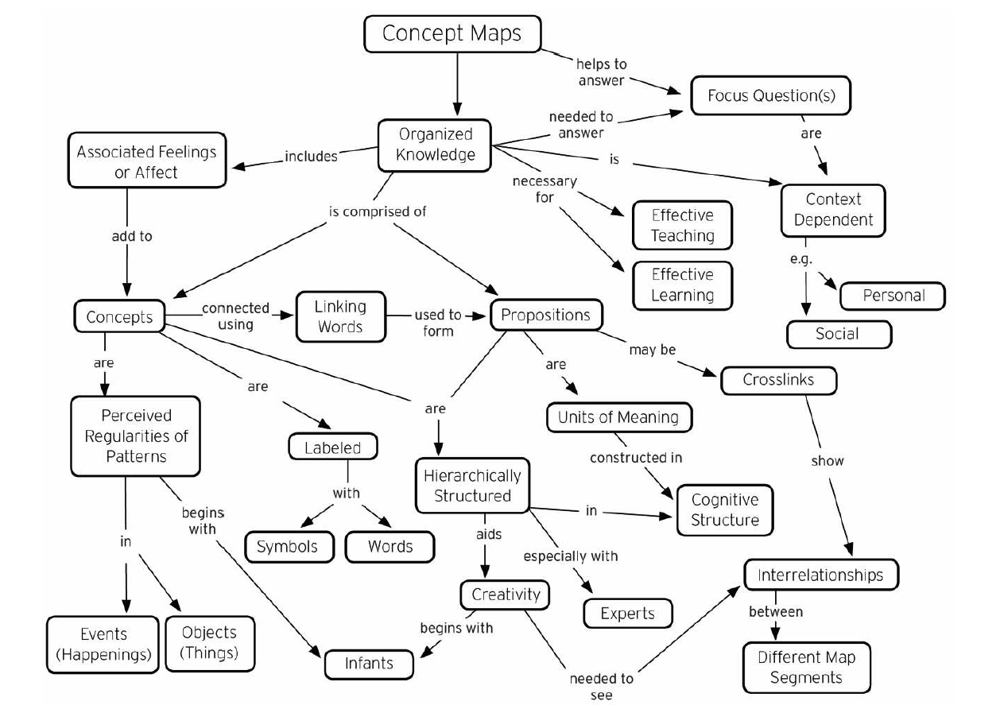

- 100 Days of UX
- Concept Mapping
A concept map is a sense-making tool that connects a large number of ideas, objects, and events as they
relate to a certain domain. It provides a scaffolding that can help designers visualize the complexities
of a system, and assists them as they makeand break connections, study existing connections, and expand
on what is already understood but possibly taken for granted within a particular system.
Concept Mapping is Day 16 of 100 Days of UX, an exploratory effort to
survey the 100 methods of design outlined in
Martin and Hannington's Universal Methods of Design. For 100 consecutive days, I learn one new method
a day and write about it.
Steps
-
Gain a good (or even better, thorough) understanding of the domain
-
Devise an appropriate "focus question." The focus question is the core concept which drives the
mapping process. Concept maps are hierarchical, and the focus question is at the top of the
hierarchy
-
Identify 15 to 25 concepts that relate to the focus question.
-
Rank these concepts from general to specific with respect to the focus question
-
Link the concepts together with action words (these words relate the concepts to each other).
Since the map is hierarchical, not all concepts would link to each other.
-
Finally, revise, reposition, and rewrite until a final map emerges that adequately answers the
focus questions

References
-
Martin, B., & Hanington, B. (2012). Universal Methods of Design: 100 ways to research complex
problems, develop innovative ideas & Design effective solutions. Rockport
-
Teaching and Learning with
Concept Maps. (n.d.). Retrieved June 18, 2017
Day 15 - Competitive Testing
100 Methods
Day 17 - Content Analysis